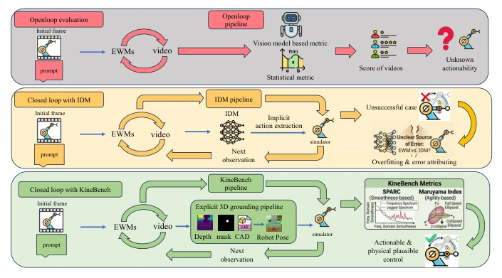
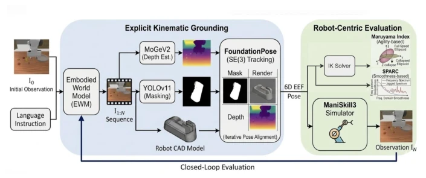
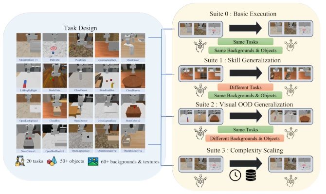
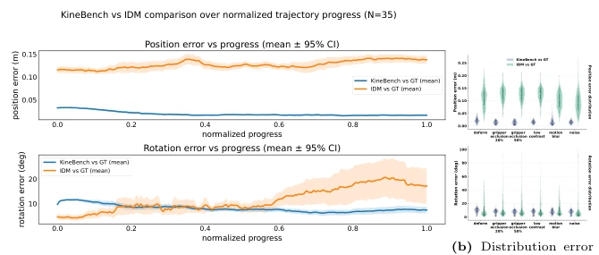
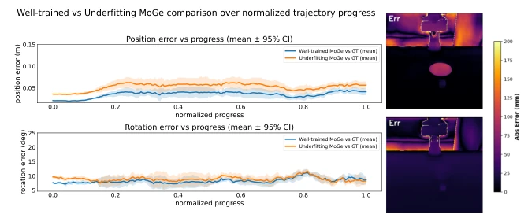
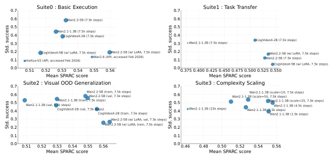
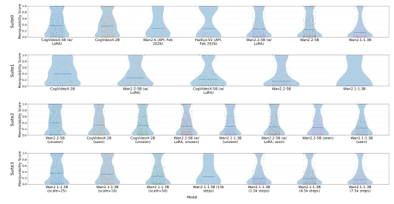

This paper finally prescribes a remedy for diagnosing "physical hallucinations" in embodied world models, effectively conducting a major cleanup in the evaluation community. KineBench's greatest contribution is cutting out the unreliable inverse dynamics model (IDM) black box in existing closed-loop evaluations, replacing it with explicit 3D kinematic grounding. This indeed resolves the attribution ambiguity problem of "whether the model generated incorrectly or the action extraction was wrong". However, the "explicit pipeline" linked by the authors using YOLO, MoGe, and FoundationPose, while transparent, also shifts the error source from IDM to depth estimation and segmentation, essentially still relying on the robustness of external perception modules, not flawless. Additionally, the "complexity-limited scaling" phenomenon found in experiments is quite interesting, indicating that piling up data volume does not necessarily solve complex physical interactions, which is a cold shower for the community blindly scaling. Overall, this is a paradigm shift in evaluation from pixel space to kinematic space; although it introduces new perception dependencies, it significantly improves the interpretability of physical feasibility evaluation, worthy of the title of "physics class representative".
The physical consistency evaluation of Embodied World Models (EWM) is a long-standing difficult problem. Existing closed-loop evaluation frameworks, such as WoW-World-Eval [10] and World-in-World [40], almost all rely on IDM to extract actions from generated videos. The problem is that IDM performs extremely poorly out-of-distribution (OOD); facing new objects or scenes in generated videos, IDM is prone to failure. This leads to serious attribution ambiguity in evaluation results: is simulation failure because the video generated by the world model is physically infeasible, or because IDM action extraction failed? This confusion makes it impossible to accurately evaluate the true physical understanding capability of EWM. Additionally, IDM struggles to handle the complex mapping from 2D pixels to 3D kinematics and is prone to overfitting the training data distribution. Therefore, there is an urgent need for an IDM-free, explicit kinematic grounding-based closed-loop evaluation method to separate model error from extractor error, ensuring the evaluation targets the physical capability of the world model itself rather than the generalization capability of the action extractor.

Fig. 1: Comparison of evaluation paradigms for Embodied World Models. KineBench provides an IDM-free, 3D kinematic grounding pipeline for rigorous physical validation, resolving issues of physical actionability and attribution ambiguity.
KineBench constructs an IDM-free closed-loop evaluation framework. The overall process is: World Model generates video -> Explicit kinematic grounding extracts end-effector 6D pose -> Executes in physics simulator -> Evaluates success rate and kinematic metrics. The core innovation lies in the explicit grounding pipeline: first using fine-tuned YOLO to segment end-effector masks, then using MoGeV2 to recover metric depth, and finally performing CAD-based 6D pose tracking via FoundationPose. This geometric pipeline is more stable than IDM, can suppress high-frequency noise but is sensitive to physical hallucinations (such as gripper disappearance). The CAD-constrained pose tracking process provides geometric regularization effects: rigid body constraints can suppress small frame jitter, while larger inconsistencies (such as gripper disappearance) produce unstable pose estimates, similar to the low-pass filtering effect of an admittance controller. In evaluation dimensions, besides execution success rate, two robotics classic metrics are introduced: SPARC measures trajectory smoothness (frequency domain), defined as the arc length of the normalized Fourier magnitude spectrum, physically smooth action energy concentrates at low frequencies; Maruyama Manipulability Index measures kinematic feasibility (Jacobian determinant), reflecting the robot's ability to avoid singular configurations. Task design includes 20 ManiSkill3 manipulation tasks, divided into four Suites: Basic Execution, Task Transfer, Visual OOD Generalization, and Complexity Scaling, comprehensively probing model boundaries.

Fig. 2: KineBench evaluation pipeline

Fig. 3: Overview of the KineBench Task and Benchmark Design
Evaluated models such as Wan 2.1/2.2 and CogVideoX on 20 ManiSkill3 tasks. Comparative experiments show that KineBench's pose extraction is more robust than the IDM baseline under visual perturbation, with lower position error. Main results found that large models perform better on complex contact tasks, but performance drops significantly under visual OOD, indicating models rely on appearance features rather than geometric affordance. SPARC scores and success rate are strongly correlated in under-optimized models, but saturate in fine-tuned models. Manipulability index reveals cognitive differences in models regarding robot body structure; LoRA fine-tuned models perform better than full-parameter fine-tuning on transfer tasks. Scaling experiments show that as task complexity increases, the marginal return of increasing data volume diminishes, presenting a non-linear scaling trend. For example, Wan 2.1 performance drops with increased data on simple tasks, but improves with increased optimization steps on complex tasks. This provides empirical guidance for future EWM data scaling strategies.

Fig. 4: Generalization and robustness comparison between KineBench and the IDM baseline. (a) Trajectory-wise translational and rotational errors on seven unseen test tasks. The IDM is trained on all trajectories from the ten training tasks in Suite 1, with 100 trajectories per task. For evaluation, we randomly sample five trajecto- ries from each unseen task and compare the recovered end-effector poses with simulator ground-truth poses. (b) Distributions of pose-estimation errors under controlled visual perturbations, including gripper deformation, increasing levels of occlusion, reduced contrast, motion blur, and image noise. Lower values indicate more accurate pose re- covery.

Fig. 5: Comparison of pose and depth estimation errors under different MoGe depth quality levels. (a) Pose errors between trajectories reconstructed from MoGe-estimated depths and the ground-truth poses. (b) Heatmap visualization of depth errors between MoGe-estimated depths and the corresponding ground-truth depths. Despite the difference in depth estimation quality, the resulting pose errors remain very similar, demonstrating the robustness of the proposed pipeline.

Fig. 6: Relationship between SPARC score and standardized success rate across models. Each point represents one model within a benchmark suite. The x- axis shows the task-balanced mean SPARC score, and the y-axis shows the standardized success rate.

Fig. 7: Manipulation score across different suites. The figure presents violin plots of the Manip score across different suites, illustrating the distribution of manip- ulation performance across models. Lower values indicate better manipulation quality, corresponding to more accurate and stable execution of the generated trajectories. The Manip score is computed from trajectory costs obtained via PyRoki and normalized using a robust min–max scaling based on the 10th–90th percentiles.